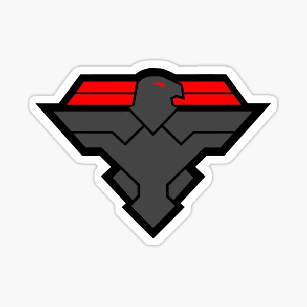

назад
Біоми
Корпорації

Hawkeye:
Частная военная корпорация Hawkeye, более известная просто как Hawkeye, является четвертой
корпорацией в TerraTech. Это высокотехнологичная наемная организация. У них нет оборудования для
обработки ресурсов, за исключением собственных скреперов, блоков ресурсов, нефтеперерабатывающих
заводов и производителей. (На самом деле, несмотря на наличие сборщика ресурсов, у них нет приемника
ресурсов.) Общая мобильность этой корпорации превосходит GSO, но уступает Venture, с установленными
снизу колесами, велосипедными колесами и ступенями танка.
Hawkeye обладает обширной линейкой оружия и тактического защитного снаряжения, верного своему
названию Эти блоки более специализированы в бою, чем любая другая корпорация. Они также являются
первой корпорацией, которая имеет блоки, которые поддерживают постоянный вертикальный полет, а не
просто зависание, эффективно позволяя строить вертолеты.
Большинство блоков Hawkeye, как правило, жестче, чем у других корпораций. Даже по сравнению с силой
на одну клетку, они все равно имеют много здоровья на клетку. Как недостаток, почти все, что они
делают, очень тяжелые, особенно для базовых блоков.
Лор и информация
Hawkeye ЧМК - это, по сути, наемники, нанятые правительствами и деспотами, чтобы выполнять серьезно
грязную работу. По мере того, как «Соколиный Глаз» рос, он расширялся и в производство, и в продажу
оружия, привлекая экспертные знания своих сотрудников, чтобы предлагать наиболее эффективные и без
излишних инструментов ведения войны.
Блоки Hawkeye, как правило, близки к футуристическим версиям современной военной технологии с
сочетанием других, обычных (классическим примером является «Крылатая ракета Ястреба»). Так что их
оружие в целом явно мощное. Все они выполнены с матовой черной краской, которая имеет форму и стиль,
как военная техника Black Ops, скрещенная со стелс-дизайном. Его не интересует ничто иное, кроме
тактической грубой силы.
обоснование
«Бывшие военнослужащие создают частную военную компанию. Наемники спецназа, нанятые для самых
богатых людей, угнетают самых бедных. Эти хладнокровные убийцы рекламируют высокотехнологичное
снаряжение гуччи, которое было бы далеко за пределами досягаемости среднего жалованья. Мы поставляем
инструменты для классных парней, которые здесь, чтобы выполнить свою работу и вовремя вернуться к
еде ».
NPC
Сержант Smash
Король пауков (умерший)
сурок лесной американский
Командир бомбардировщиками
Получение лицензии
Миссия GSO - Хищная птица (Доступно по лицензии GSO 4 или выше)
Миссии
Черные Оперативники
Обеспечить защиту союзных технологий от хулиганов.
Поиск области для доставки ящик в течение срока.
Проверьте ящик в определенном месте и победите врагов, если они есть.
Устранить конкретную группу техников. (Обычно Hawkeye Techs)
Форт Коронтоп Хилл (3 класс)
Командование бомбардировщиками (2 класс)
пустяки
Соколиный Глаз - вторая корпорация, полное имя которой содержит аббревиатуру.
Похоже, у них есть хотя бы один штаб, который снабжает их заказами удаленно.
У них также есть средство RND, подразумеваемое из описания Лазерной пушки Hawkeye Zeus.
Некоторые блоки корпуса содержат возражения и разногласия с аналогами других корпусов.